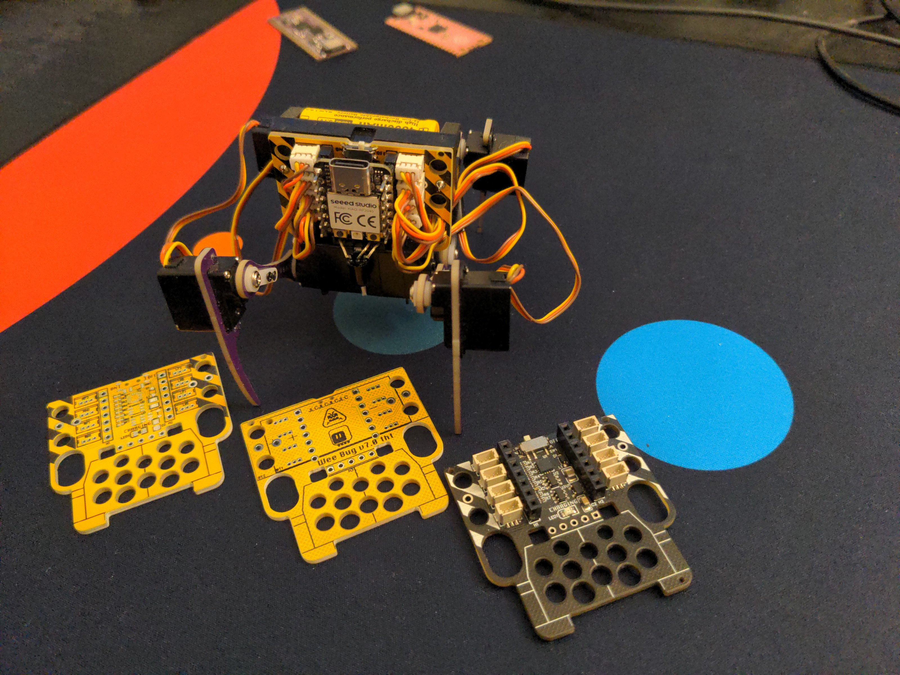

1mm and 1.25mm Versions¶
Published on 2023-12-12 in Wee Bug.
The 2g servos I’m using for weebug come in three different connectors: the traditional 2.54mm pitch servo plug, a 1.25mm pitch jst plug, and a 1mm pitch plug. I think the traditional plug is way too big for this kind of robot, so that leaves us with two versions: the 1.25mm and 1mm. I started with the bigger one initially, because that’s what I had in my drawer, and I used through-hole sockets for them for the same reason. But when I later wanted to switch to SMD sockets, I found that all 1.25mm socket are for some reason unreasonably large, with big additional structural elements added on both sides. I switched to 1mm sockets because they were tiny in comparison. So all recent versions of the weebug use the 1mm sockets.
I still had two early versions using the 1.25mm servos, and I wanted to upgrade them to the newer PCB. So I did a quick replacement to the through-hole sockets in the design, nudged aside some of the traces that got in the way on the back side, and added a footprint for the smaller battery holder, so that I can use either one. Oh, and I ordered it with yellow soldermask and black silkscreen, so that the danger stripes look how they should:
I transplanted the legs from one of the old bots, and it works. I just have to update the code to account for the change of which servo goes to which pin.
In other news, I’m still investigating servo power issues. No definitive conclusions yet, but I’m leaning towards ditching the boost converter and putting the servos back on direct battery power. Together with using reasonable quality of batteries, that should help.